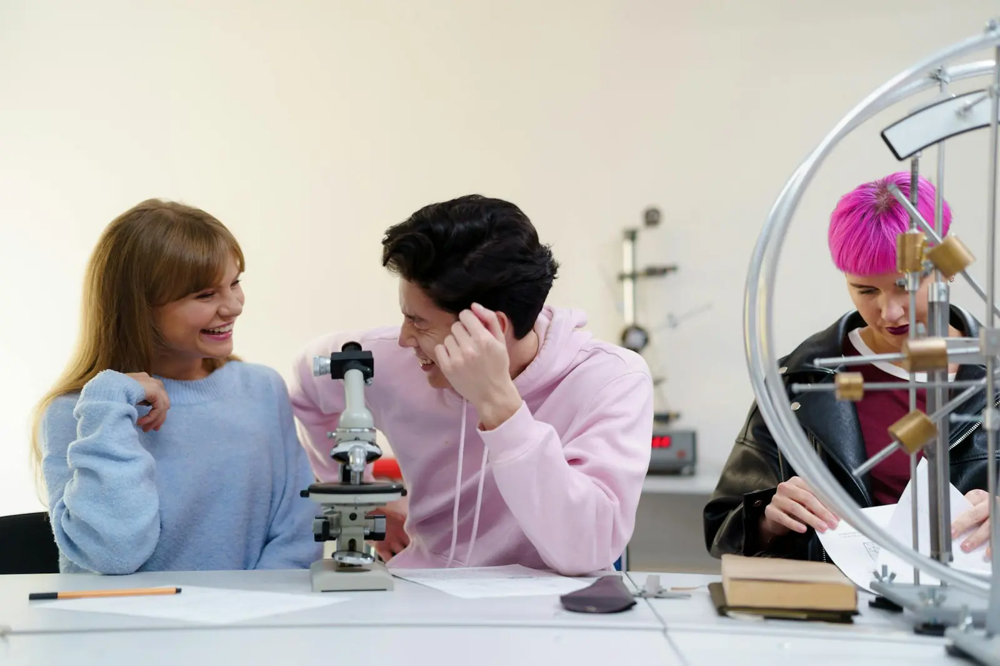
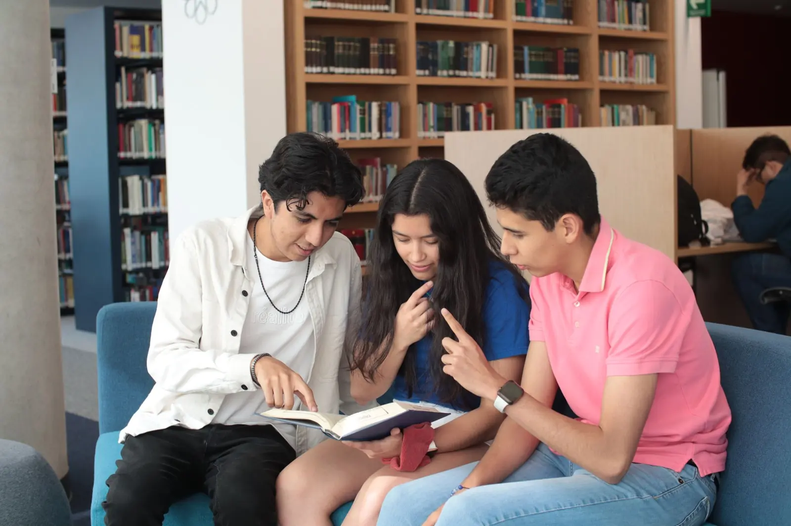
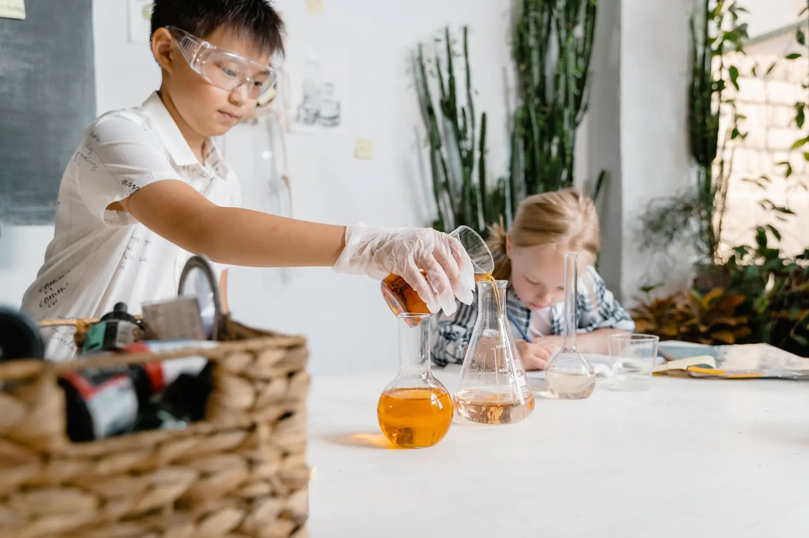
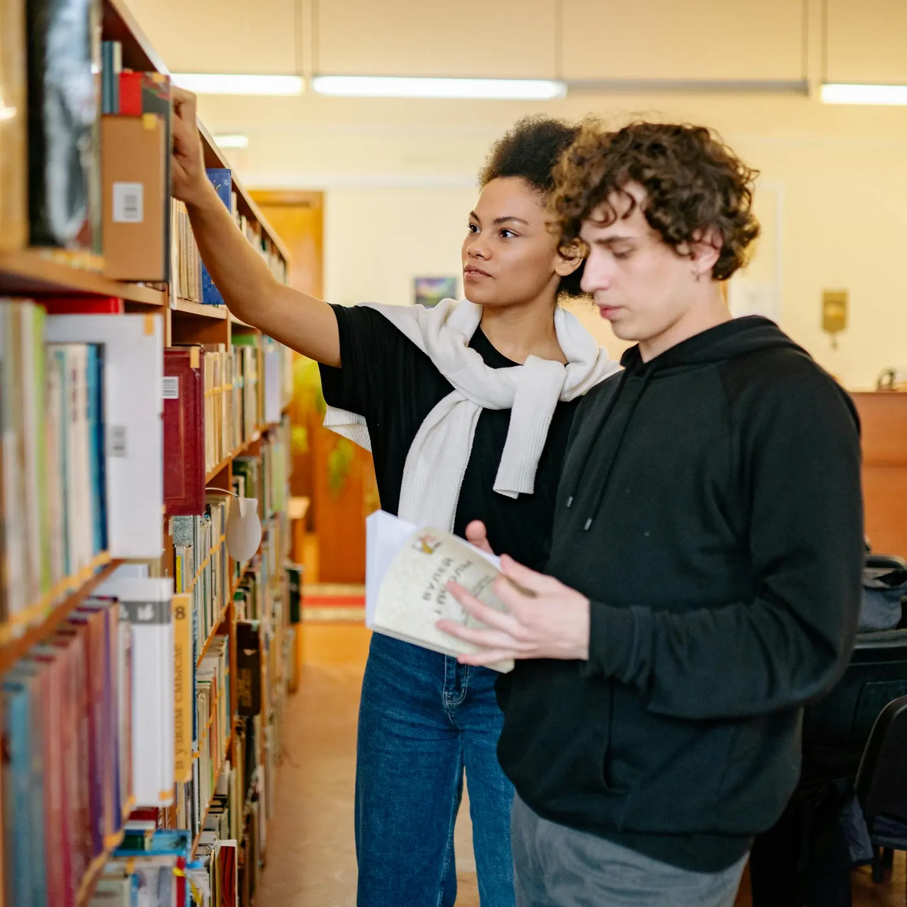

课堂学习
重视基础知识、学习习惯和思维训练，让学生在稳定节奏中积累信心。

Academics
课程页面把学科学习、课堂秩序、教师陪伴和学生发展支持放在一起，帮助家庭了解入学后的学习节奏。
Learning Model
重视基础知识、学习习惯和思维训练，让学生在稳定节奏中积累信心。
通过日常答疑、学习反馈和班级管理，帮助学生看见自己的进步方向。
把社团、研学、体育和文化活动纳入成长支持，避免学习体验只停留在课桌上。
Pathways

在阅读、查资料和同伴讨论中建立学习习惯。

把观察、验证和表达纳入科学学习过程。

通过持续阅读拓宽知识视野，也训练信息筛选能力。